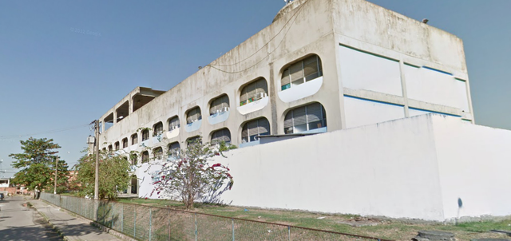

Sobre
O Ciep Brizolão 404 - Clarice Lispector, é uma Escola pública e urbana. Com uma ótima estrutura, que conta com diversos ambientes educativos, laboratório de informática, sala de ciências, quadra esportiva coberta, biblioteca, sala de leitura, banheiro adequado a alunos com deficiência ou mobilidade reduzida, banheiro com chuveiro, auditório, pátio e etc. Oferece também alimentação escolar para os alunos e atividade complementar. Atende as modalidades: ensino regular, ensino fundamental, ensino médio e EJA - fundamental.
